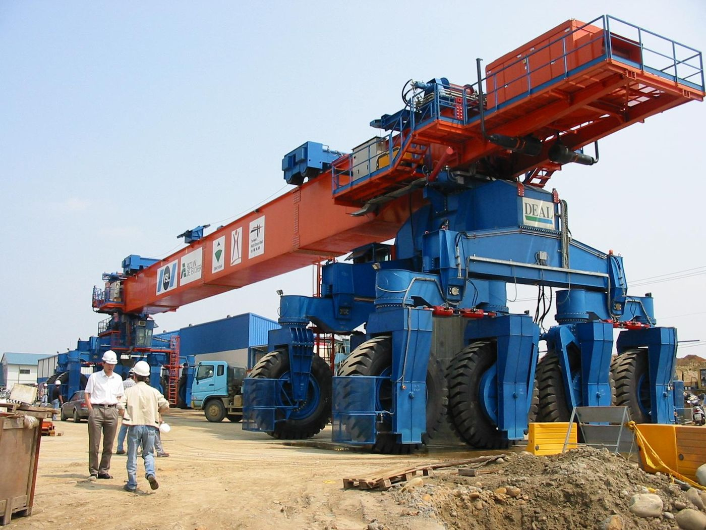

01 Why Switzerland
Taiwan and Switzerland both lack resources and rely on brains.

When Taiwan talks about development models, it often compares itself with Singapore and Switzerland. Singapore is called the Switzerland of the East for high productivity and finance—but why does Taiwan keep lining itself up against Switzerland too?
Switzerland is a bit over 40,000 square kilometers—slightly larger than Taiwan’s 36,000—yet has only about eight million people versus Taiwan’s twenty-four million. Density is roughly four times higher here. Both stand somewhat alone: Switzerland by mountains, Taiwan by sea. Neither is rich in natural resources. Survival depends on brains.
In the 2019 IMF rankings, Swiss GDP per capita was about US$83,716; Taiwan’s about US$24,827. The gap is not just a number—it is the result of industry choices and institutional culture.
I started work during Taiwan’s high-speed rail build, at a Swiss firm headquartered in Bern. From structure to schedule, I saw up close how a small country embeds value at every joint: precision, high unit price, and skills that export.
This book is not about turning Taiwan into a Swiss replica. It asks whether, under the same ‘brains only’ constraint, Taiwan can aim true—becoming a stable, high-value, trusted core in the region.
Source: Taiwan's Great Future — Switzerland Today, Taiwan Tomorrow — Eugene Chang · 1. Switzerland & Taiwan